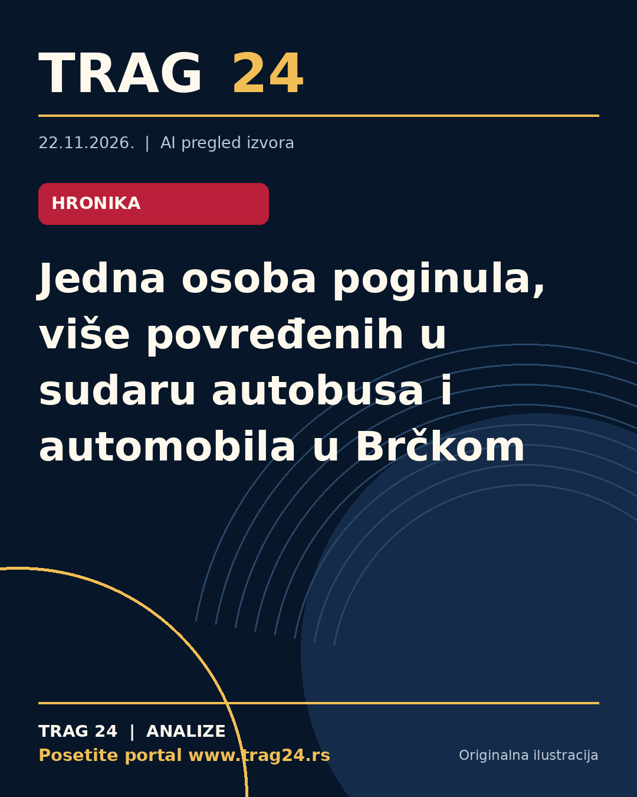

Jedna osoba poginula, više povređenih u sudaru autobusa i automobila u Brčkom

ŠTA SE DOGODILO
U Brčko distriktu BiH dogodio se sudar između autobusa i putničkog automobila, u kojem je jedna osoba izgubila život, dok je više njih povređeno. Incident se odigrao u večernjim satima.
HRONOLOGIJA
Nesreća je zvanično prijavljena policiji u 19:01 časova. Odmah nakon prijave, na mesto događaja upućene su nadležne službe radi pružanja pomoći povređenima i obavljanja uviđaja. Saobraćaj na toj deonici je privremeno obustavljen zbog istrage i bezbednosnih mera.
ŠTA NAVODE IZVORI
Portparolka policije Brčko distrikta, Dževida Hukićević, potvrdila je da je došlo do sudara autobusa i automobila i da je jedna osoba poginula. Više povređenih je prevezeno i zbrinuto u javnoj zdravstvenoj ustanovi u Brčkom. Na mesto nesreće izašao je dežurni tužilac Tužilaštva Brčko distrikta BiH. Izvori su saglasni po pitanju osnovnih činjenica o događaju.
ŠTA JE POTVRĐENO
Potvrđeno je da je jedna osoba preminula usled nesreće, da je više njih zadobilo povrede, kao i da su nadležni organi izvršili uviđaj na mestu sudara. Takođe, potvrđena je i obustava saobraćaja na toj trasi usled istrage.
ŠTA NIJE POTVRĐENO
Detalji o identitetu nastradalog i povređenih osoba, uzrocima nesreće, kao i da li su u nesreći učestvovali drugi učesnici u saobraćaju nisu dostupni u objavljenim izveštajima.
ŠTA OSTАJE OTVORENO: Istraga o tačnom uzroku sudara je u toku, kao i prikupljanje dodatnih informacija o broju i stepenu povreda. Takođe, ostaje nepoznato koliko je putnika bilo u autobusu i da li postoji detaljniji izveštaj o okolnostima nesreće.
Izvori
- https://nova.rs/vesti/svet/jedna-osoba-poginula-vise-povredjenih-u-sudaru-autobusa-i-automobila-u-brckom/
- https://www.danas.rs/svet/region/jedna-osoba-poginula-vise-povredjenih-u-sudaru-autobusa-i-automobila-u-brckom/
- https://n1info.rs/region/jedna-osoba-poginula-vise-povredjenih-u-sudaru-autobusa-i-automobila-u-brckom/
Ova analiza je pripremljena uz pomoć veštačke inteligencije na osnovu javno dostupnih izvora. Navodi izvora nisu nužno nezavisno potvrđeni.